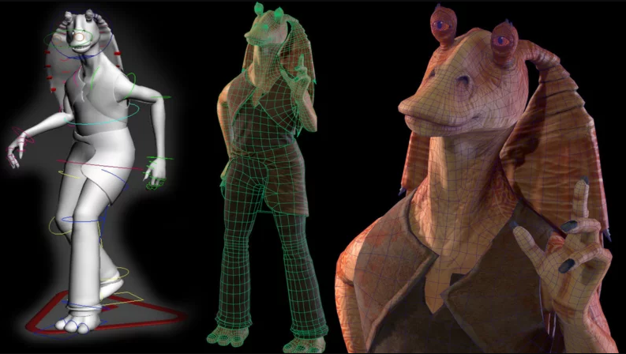

La trilogía de precuelas de Star Wars, lanzada entre 1999 y 2005, marcó un hito en la evolución de los efectos especiales en el cine, llevando la tecnología cinematográfica a nuevos niveles. En contraste con la trilogía original, creada en la década de 1970 y 1980, las precuelas aprovecharon avances significativos en la tecnología para ofrecer una experiencia visualmente impactante y vanguardista.
En la trilogía original, dirigida por George Lucas con un presupuesto limitado, los efectos especiales se basaban en técnicas prácticas y maquetas. La icónica Estrella de la Muerte y las naves espaciales se crearon con modelos físicos, y la magia del cine se lograba mediante la composición óptica. Aunque revolucionarios en su época, estos efectos tenían limitaciones tecnológicas que se hacían evidentes, especialmente cuando se comparan con los estándares visuales modernos.
Las precuelas, por otro lado, se beneficiaron del auge de la tecnología digital. George Lucas, aprovechando los avances en gráficos por computadora y efectos visuales, introdujo personajes completamente digitales como Jar Jar Binks y creó escenarios virtuales impresionantes. La inclusión de actores reales en entornos generados por computadora permitió una integración más fluida entre lo real y lo digital.
La trilogía de precuelas también fue pionera en la captura de movimiento, utilizando actores para dar vida a personajes completamente generados por computadora, como Yoda. Esta técnica permitió una expresividad y realismo sin precedentes en personajes CGI. Además, la creación del ejército de clones y las secuencias de batalla a gran escala se realizaron con efectos visuales de vanguardia, elevando las escenas de acción a un nivel impresionante.
Aunque las precuelas recibieron críticas mixtas en cuanto a su narrativa, la innovación en los efectos especiales fue indiscutible. Al compararlas con la trilogía original, es evidente cómo la tecnología transformó la forma en que se contaban las historias en la galaxia muy, muy lejana. Aunque las raíces de Star Wars y su encanto clásico se encuentran en la trilogía original, las precuelas llevaron la saga a nuevas alturas visuales y tecnológicas, estableciendo un estándar para los efectos especiales en la era moderna del cine. Ambas trilogías, cada una a su manera, dejaron una marca duradera en la historia del cine y en la cultura popular.